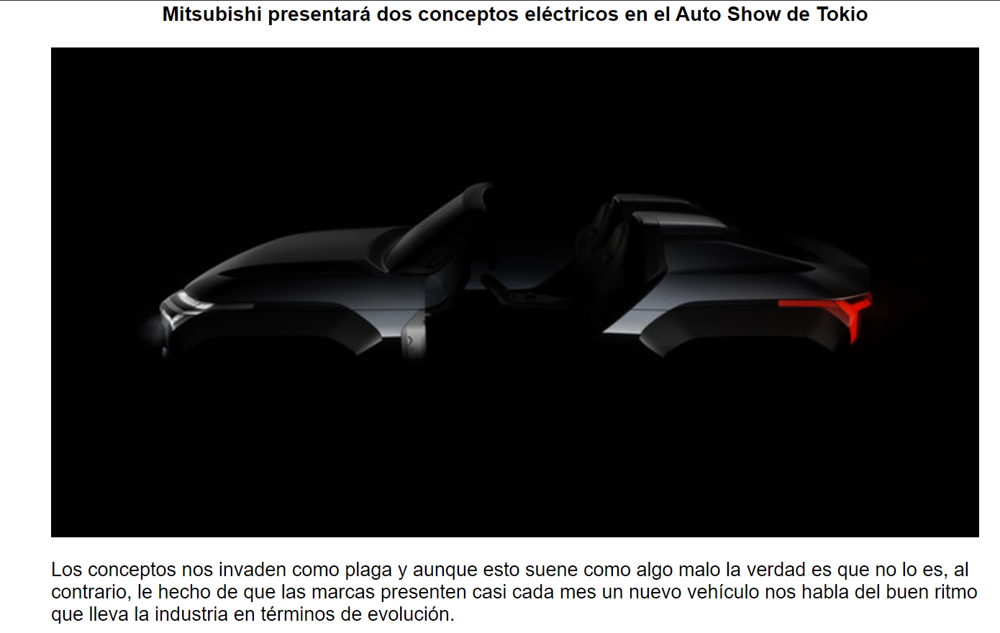
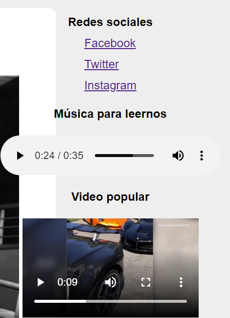
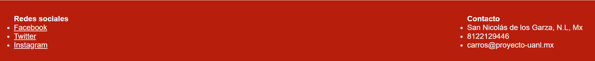

Explicación de la página de la práctica 5
La etiqueta <header> se utilizó para crear el encabezado rojo:
El encabezado a su vez, contiene las etiquetas <nav>, <ul> y <li>. La etiqueta <nav>, le hace saber al navegador que esa parte es el menu de navegación. La etiqueta <ul> crea una lista desordenada y la etiqueta <li> es un elemento de esa lista.
Para el contenido principal se utilizo la etiqueta <main>, ya que ese es su propósito:
Cada uno de los artículos está creado con una etiqueta <article>, esta etiqueta contiene las etiquetas <h3> para indicar el título del artículo. También contiene las etiquetas <figure> y <figcaption>, estas etiquetas indican la imagen principal de la sección y un pequeño subtítulo de esta imagen, respectivamente.
En la parte derecha, se encuentra el <aside>, que indica el contenido secundario que normalmente se encuentra como apoyo general para la navegación de la página. Este <aside> contiene las etiquetas:
<video> que permite incrustar un video en la página. La URL del video se coloca en el parámetro "src". Nostros también incluímos el parámetro "controls" que hace que los controles del video sean visibles.
<audio>. Esta etiqueta, al igual que la etiqueta <video>, usa los parámetros "src" y "controls", y funcionan igual que los de la etiqueta <video>.
<footer> indica el pie de la página. Dentro del <footer> colocamos dos etiquetas <section> para separar en secciones el contenido del footer. Las secciones son: redes sociales y contacto.
Conclusiones
- Emilio González Rodríguez: En esta práctica se conocieron más etiquetas de HTML5 y maneras para agregar contenido audiovisual. Estas etiquetas sirven para poder diferenciar el propósito de cada una de las partes que conforman el documento. Además también existen las etiquetas video y audio que permiten a los desarrolladores insertar contenido de facilmente. La página web que realizamos utilizo muchas de estas etiquetas como main, aside, section, y las etiquetas para el contenido audiovisual "video" y "audio". No fue muy complicado realizar la página y fue muy interesante usar estas etiquetas.
- Juan Pablo Amaya García: Gracias a esta practica sé hacer uso de las diferentes etiquetas que tiene HTML y ver sus diferentes funciones, como en el encabezado que se uso la etiqueta "header" para indicarle al navegador que es un encabezado, luego un "nav" para que es un menú de navegación y el "ul" para poder hacer un lista desordenada y a cada parte que se ve en el encabezado como el inicio, noticias, etc., tienen una etiqueta "li" para hacerlo un elemento de la etiqueta "ul" que se uso, y aparte de eso se pudo ver como llamar contenido multimedia como las fotos, el video, el audio, etc.
- Raul Alejandro Castillo Medina: En esta practica reforzamos lo que vimos en la practica 4 al hacer uso de hypervinculos, listas y etiquetas para movernos a traves de la pagina, personalmente creo que esto nos ayudo a mis compañeros y a mi a tomar en cuenta que podemos diseñar paginas de este estilo y tomarle gusto y quiza en futuro podriamos poner una empresa o negocio que se dedique a programar paginas web, con todo lo que conlleva esto, le agregamos contenido multimedia como musica, videos y fotos , en especifico de autos deportivos que nos gustaron a todo el equipo, espero podamos aprender mas de html y hojas de estilo.
- Ulises Baltazar Garza Garcia: En esta ocacion se nos pone en practica herramientas de HTML5 que en verciones anteriores no se habían implementado como el podrr colocar videos y musica sin usar otras erramientas externas ademas de hacernos tratar con hipervínculos para hacer que la pagina se conecte con otros sitios aumentando y mejorando nuestra pagina web, ademas nos dieron la libertad para crear la pagina a nuestro plaser dandonos a conoser que las paginas web no tiene un formato predefinido, todo depende la vista que nosotros le demos.
- Jorge Rivera Gomez: En esta practica conocimos mas etiquetas que podemos utilizar con HTML5 para un diseño mas dinámico y mas visiblemente estético, utilizamos etiquetas para insertar vídeos y audio para una mejor navegación por el sitio web así como incluimos en la hoja de estilos dichos efextos, como la parte del menú de navegación, pudiendo nosotros darle un estilo mas personal y darnos cuenta que no hay limitaciones, incluso ya que fue tema libre y pudimos colocar audios de acuerdo al tema seleccionada .